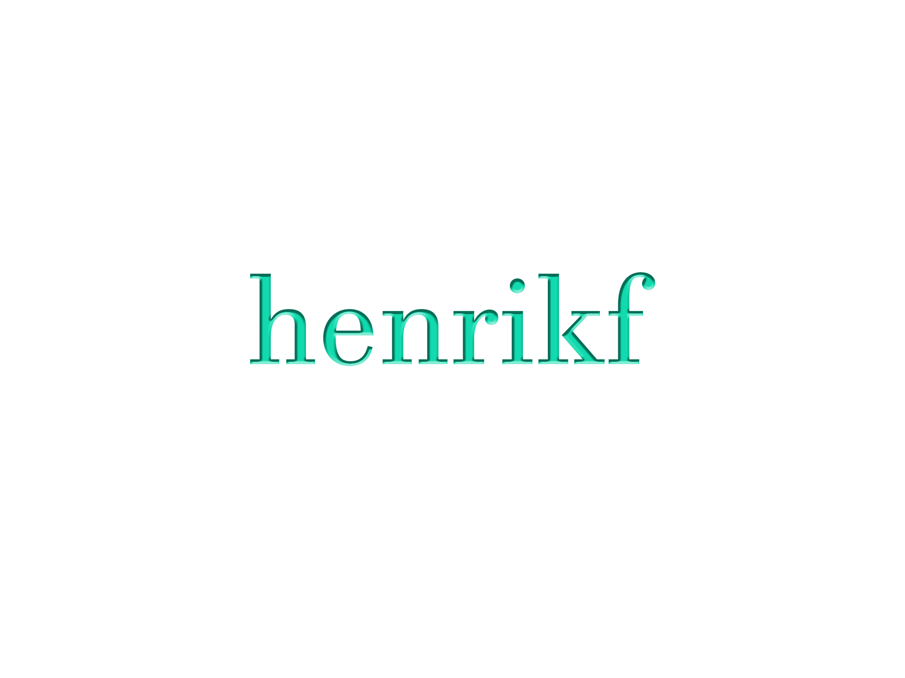
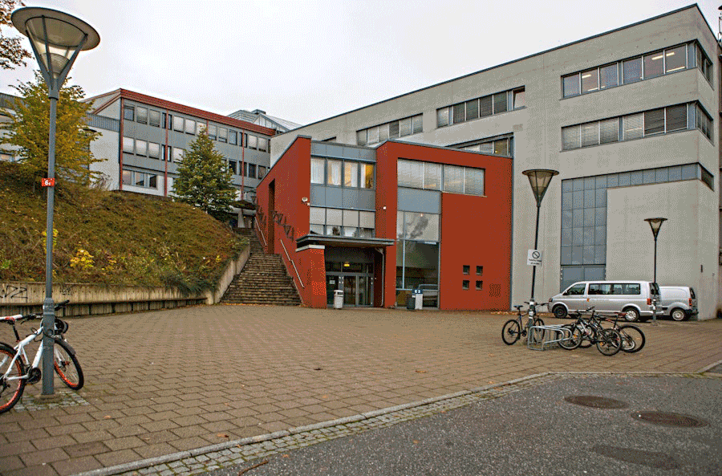

Velkommen til min personlige nettside: laget av Henrik
henrikf
HOME
INFO
messi
Video Production
Web Development
Contact

HOME
ABOUT
PORTIFOLIO
SERVICES
VEILEDNING GIF
Twitter.com
Viken.no
Oppgave 4 Produksjon og Historiefortelling:

1. dramaturgiske virkemidler:
• spenning
• kontraster
• ritualer
• symboler
• rytme
• gjentagelser
2. HTOT Hel totalt UNÆ Ultra nær
3. Horisonalt perspektiv
4. Kamera du bruker instillingene på brightness lysstyrken er alt for høy og dermed overeksponerer til et hvit sterkt lys.
5. ISO på er sensiviteten til lys på et kamera, i visse situasjoner hvor du befinner deg om kvelden det er mørkt ute kan det å justere ISO-en får å få en bedre lukkertid bildet.
6. linjesvitsjing er når du skal koble deg selv på internett med din pc. Så har alle pc-er en unik MAC-adresse, som tilkobler seg til en linjesvitsj får å få internettilgang. Pakkesvitsjing ved bruk av TCP er når du sender for et bilde til en mottaker så oppløses bildet i mindre biter sendes ut i forskjellige veiledninger fram til destinasjonen. Mottakeren får bildet raskere og ingen mist av kvalitet på bildet.
7. IP-nr -Internett Protokoll - Hver ruter har et helt unikt IP-nummer som er utført av din ISP-internettservice provider. Som identifiserer din enhet MAC adresse og gir deg tilgang til internett. Subnet Mask Subnet masker er koblet til din IP adresse og DNS Er et navn på en internett adresse som oversetter IP adressen til websiden til et kjøpt DNS for eksempel youtube.com DHCP leder holder internett ledelsen til å indentifisere IP adresser. TCP transmission controll protocoll
Holder nettverket og kan vedlikeholdet kommunikasjon over to forskjellige IP adresser.
En svitsj er mottaker signaler og sendes signaler fra ICP, enheter og sender signaler i linjer til din enhet i bestemte retninger.
Din ruter er ditt wifi, din ICP-internettservice provider gir internettetilgang til ruteren din og enheter ved bruk av MAC adresse og IP adresse.
Brannmur er din datamaskin sikkerhets enhet som overvåker innkommende filer og utkommende nettverkets sikkerhet på internett. Administrator av pc-en har tilgang til brannmuren.
NAT sender pirat kopier ved å skifte IP adresse mellom mottaker eller sender kan brukes av VPN og en spesiell ruter. Nummerere av host 64 subnet mask lokal internett 192.168.0.191 255.255.255.192 IP Class: C IP type: private